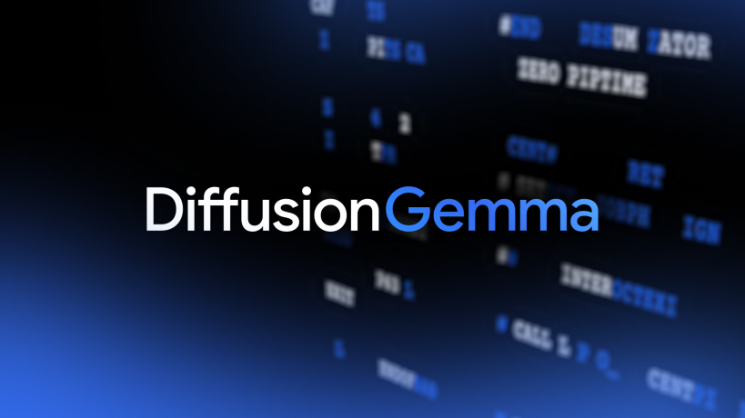

2026 年 6 月 10 日，Google DeepMind 悄然开源了一款名为 DiffusionGemma 的实验性模型，它可能不是参数最大的模型，却可能是今年最具颠覆性思路的模型之一。与传统大语言模型（LLM）逐 token 顺序生成的「自回归」路径不同，DiffusionGemma 采用文本扩散技术，一次性并行生成 256 个 token，在 H100 GPU 上达到 1000+ tokens/s 的推理速度——这相当于同等参数规模传统模型的 4 倍。
更令人兴奋的是，这款 26B 参数的 MoE（混合专家）模型，推理时仅激活 3.8B 参数，量化后只需 18GB 显存即可在消费级 GPU 上运行（如 RTX 5090 可达 700+ tokens/s）。它并非要取代传统的 Gemma 4 系列，而是开辟了一条面向低延迟、本地化、交互式 AI 工作流的新路。
自 2017 年 Transformer 架构诞生以来，几乎所有主流 LLM（GPT、Claude、Gemini、Llama 等）都遵循自回归生成范式：模型一个 token 一个 token 地生成文本，每个新 token 依赖前面所有已生成的 token。这种「串行」方式虽然保证了质量，但也成了性能瓶颈——生成速度受限于内存带宽，GPU 计算单元在大部分时间里处于等待状态。
扩散模型（Diffusion Models）此前在图像生成领域（如 Stable Diffusion、DALL·E 3、Midjourney）已经证明了其强大能力：通过从随机噪声开始，逐步去噪还原完整图像，能够在 10-50 步内生成高质量图像，远快于逐像素生成方式。现在，Google DeepMind 的研究人员成功将这一思路应用到文本领域——这就是 DiffusionGemma 的核心理念。
「DiffusionGemma 将解码瓶颈从内存带宽转移到计算能力，首次让文本扩散在消费级 GPU 上获得实际可用性。」 — Brendan O'Donoghue，Google DeepMind 研究科学家
这一突破建立在两个关键前提之上：一是 Gemma 4 家族在「每参数智能密度」上的行业领先表现，二是 Google 此前在 Gemini Diffusion 研究中积累的文本扩散技术基础。
传统自回归模型的生成过程可以理解为「写一行字看一行」——每个新词都要回头看完前面所有词才能写出来。DiffusionGemma 则像是一位画家：先画出整幅画的轮廓，再逐步添加细节，直到最终完成。每次前向传播并行生成 256 个 token，通过多次迭代自纠错来提升质量。
这种双向注意力机制（Bi-directional Attention）让每个 token 都能「看到」前后所有 token 的上下文。对于代码补全（Code Infilling）、内联编辑（In-line Editing）、氨基酸序列预测等非线性任务来说，这是天然的优势——因为这些场景中，「未来的 token」对「当前的 token」同样重要。
DiffusionGemma 采用混合专家（Mixture of Experts）架构，总参数量为 26B，但推理时每次只激活其中的 3.8B 参数。这意味着它既有大模型的「知识储备」，又保持了小模型的「运行效率」。经过 4-bit 量化后，模型仅需 18GB 显存——这意味着你可以在 RTX 5090（32GB）、RTX 4090（24GB）甚至部分专业笔记本 GPU 上本地运行。
在性能测试中，DiffusionGemma 展现出令人瞩目的速度优势：
DiffusionGemma 以 Apache 2.0 许可证开放，这意味着可以自由用于研究、商业应用和二次开发。开发者可以通过 Hugging Face 下载模型权重，并使用 Google 提供的推理代码快速上手。
消息发布后，AI 社区对这一「非自回归」路线给予了高度关注。有开发者指出，DiffusionGemma 的实验性质意味着它的输出质量尚不及标准 Gemma 4 模型——这是速度与质量之间的明确取舍。但对于需要实时交互的应用场景（如 AI 编程助手的即时代码补全、文档编辑器的实时建议），这一速度优势可能远超质量上的微小折损。
「我们 fine-tuned DiffusionGemma 来玩数独——自回归模型很难完成的任务，扩散模型却天然擅长，因为每个数字的最终值取决于它在整个网格中的位置。」 — Unsloth 团队
实践中，Unsloth 团队已成功对 DiffusionGemma 进行微调，使其能够在数独游戏上表现出色——这正是自回归模型的「盲点」领域。这一案例证明了文本扩散模型在结构化数据生成方面的独特优势。
在大模型竞争格局中，DiffusionGemma 的出现标志着 Google DeepMind 正在探索一条不同于 OpenAI（持续增大自回归模型规模）和 Anthropic（聚焦安全对齐）的技术路径。它不是要「更好」，而是想要「不同」——这种非对称竞争策略值得关注。
DiffusionGemma 的发布让我们看到 AI 生成领域的三个重要趋势：
第一，推理效率重新成为核心竞争力。在过去一年中，超大模型（超过 100B 参数）虽然性能不断提升，但推理成本居高不下。DiffusionGemma 的 4 倍 速度提升暗示着，未来「小而快」的模型策略可能在特定场景中击败「大而强」的传统路线。
第二，本地化 AI 不再是纸上谈兵。量化后的 DiffusionGemma 仅需 18GB 显存，这意味着中高端消费级 GPU 就能运行。如果这一技术持续优化，2027-2028 年我们可能看到集成文本扩散模型的本地 AI 编程助手、写作工具和数据分析工具成为标配。
第三，非自回归路线可能彻底改变代码生成领域。代码生成是 AI 最活跃的应用场景之一。在代码补全、实时重构、Bash 命令生成等场景中，双向注意力机制天然适合——一个函数签名中的最后几个字符会影响前面参数的类型推断。这可能是继 Cursor、Copilot 之后的下一波编程体验升级。
当然，DiffusionGemma 目前仍是实验性模型。Google DeepMind 明确表示，对于追求最高质量的生成任务，标准 Gemma 4 仍是推荐选择。但正如 Google 在图像扩散领域的 DALL·E 和 Stable Diffusion 引领了革命一样，文本扩散模型可能只是「第一块多米诺骨牌」。
DiffusionGemma 是 2026 年迄今为止最具技术突破性的开源模型之一——它不是一个「更大」的模型，而是一个「不同」的模型。通过将扩散模型引入文本生成领域，Google DeepMind 向我们展示了 AI 架构创新的另一个方向：不是无限的规模扩张，而是跳出范式的框架创新。对于开发者社区来说，这是一个值得花时间深入研究的信号产物——第一个吃螃蟹的人，往往定义下一个时代的游戏规则。